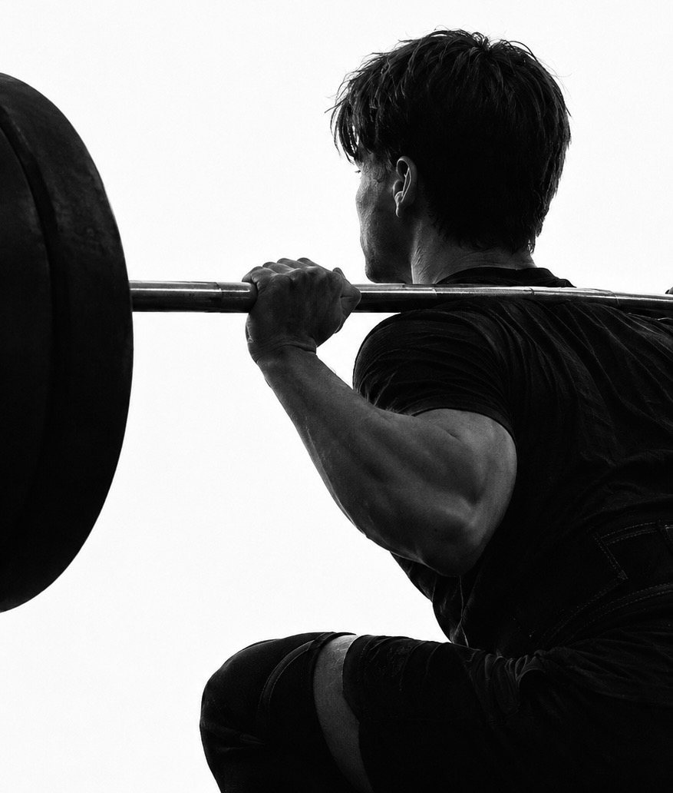

Preparazione atletica
Rendere di più nel tuo sport.
Per atleti agonisti e amatori, di ogni età e disciplina. Il programma tiene conto del tuo calendario di gare e allenamenti.
Un programma per la tua disciplina
Ogni sport chiede qualità fisiche diverse. Il lavoro parte da ciò che serve a te e segue le fasi della stagione.
- Forza e potenza
- Velocità e agilità
- Resistenza
- Prevenzione degli infortuni
Il rientro, passo dopo passo
Dopo un infortunio o un lungo periodo fermo, il corpo va riportato allo sport per gradi: si ricostruiscono forza e fiducia nel movimento, fino al rientro in allenamento e in gara.
- Ripresa graduale dei carichi
- Forza e controllo del movimento
- Ritorno alla tua disciplina
- Continuità senza ricadute
Si parte con il via libera di medico o fisioterapista.
Strength coach
La forza è il punto di partenza della preparazione di un atleta.
Sono strength coach: costruisco la preparazione atletica a partire dalla forza, poi la trasformo in potenza e velocità nel gesto sportivo della tua disciplina. Un atleta più forte produce più forza in meno tempo, e si vede in accelerazioni, salti e cambi di direzione.
La forza è anche una protezione. Muscoli, tendini e ossa allenati con carichi progressivi reggono meglio gli stress di allenamenti e gare, ed è uno dei modi più efficaci per ridurre il rischio di infortuni.
Evidenze
Cosa dice la ricerca
Con l'allenamento della forza il rischio di infortuni sportivi scende a meno di un terzo.
Lauersen et al., 2014 · 25 studi, 26.610 partecipantiGli infortuni da sovraccarico si riducono quasi della metà.
Lauersen et al., 2014 · British Journal of Sports MedicineAumentare la forza degli arti inferiori si associa a un miglioramento della velocità di corsa.
Seitz et al., 2014 · revisione sistematica con meta-analisiI dati riguardano gruppi di atleti. Il risultato di ciascuno dipende da programma, tecnica e progressione.
Esercizi chiave
Esercizi multiarticolari, carichi alti

Lo squat con bilanciere coinvolge insieme caviglia, ginocchio e anca e mette al lavoro una grande quantità di muscoli.
Per questo permette carichi molto più alti degli esercizi a una sola articolazione. Lavorare con percentuali elevate del massimale, in genere oltre l'80%, è lo stimolo che sviluppa la forza massima: migliora il reclutamento delle unità motorie e la coordinazione tra i muscoli, e rinforza muscoli, tendini e ossa.
80%+
del massimale (1RM)
Tecnica
Prima il gesto, poi il carico
Ogni esercizio si impara con carichi leggeri e si perfeziona nel tempo.
Progressione
Il carico sale per gradi
Incrementi piccoli e misurabili, con scarichi pianificati per recuperare.
Controllo
Gesto seguito e corretto
Un lavoro sicuro, a maggior ragione in età giovanile.
Chi seguo
Per ogni livello di sport
Agonisti
Atleti di ogni disciplina
Programmi che seguono il calendario delle gare e le fasi della stagione: periodizzazione del carico, lavoro su forza, potenza e velocità specifico per la disciplina e picco di forma al momento giusto.
Amatori
Chi si allena per passione
Una preparazione fisica strutturata per rendere meglio e proteggersi dagli infortuni: stabilità, mobilità e resistenza sulle esigenze del proprio sport, con sessioni compatibili con lavoro e impegni quotidiani.
Giovani atleti
Adolescenti in crescita
Preparazione atletica calibrata sulla maturazione e svolta in piena sicurezza, con carichi dosati e tecnica sempre controllata: potenza, velocità e coordinazione per gettare le basi di una carriera di successo.
Gruppi e squadre
Piccoli gruppi di atleti insieme
Anche compagni della stessa squadra: allenamenti condivisi, con carichi calibrati su ruolo e livello di ciascuno.
Contatti
Parliamo del tuo sport.
Indicami la disciplina e il tuo obiettivo.